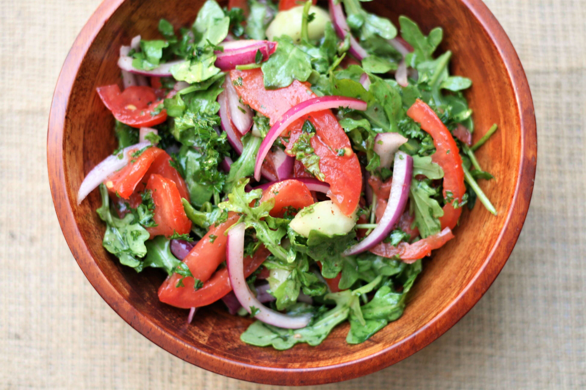

Iraqi Sumac Salad

Wanna stop feeling heavy? You gotta eat some veggies!
The Iraqi Sumac Salad (Summag Salad) has never been one of my favourite salads, i havent even heard of it, but what a nice picture it had.
I would definitely try this one.
Ingredients:
- 2 medium Roma tomatoes
- ½ large English cucumber, peeled and seeded
- ½ medium red onion
- 1 teaspoon ground sumac
- ½ teaspoon salt
- 2 cups packed fresh arugula
- 2 tablespoons fresh lemon juice
- 1 tablespoon olive oil
Cooking Steps:
- Cut tomatoes lengthwise into quarters and gently give them a squeeze to remove some of the seeds and excess liquid. Slice the tomatoes thinly and place into a large bowl.
- Cut cucumber into 1/4-inch pieces and add to the bowl. Cut onion into 1/4-inch slivers and add to the bowl with parsley. Sprinkle with sumac and salt and toss to coat. Let sit for at least 15 minutes for flavors to meld, the longer the better.
- Add arugula to the bowl and drizzle with lemon juice and olive oil. Toss to coat and adjust salt if needed. Serve immediately.
Recipes Index